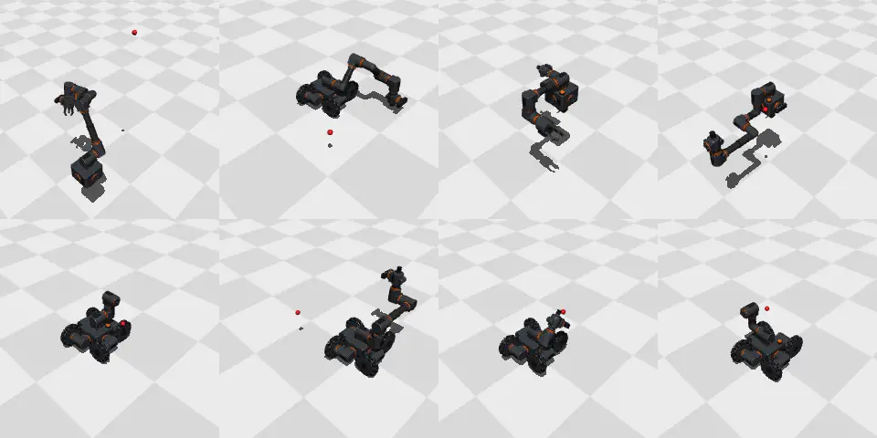

Built for the work
Most of the money in robotics right now is going into humanoids. The argument is simple: the world is built for people, so build a robot shaped like a person and it will fit everywhere.
It's a good argument for a living room. It's a bad one for a factory.
A factory is not built for people. It is built for the work, and people were adapted to it. Look at what the work actually needs. Lifting boxes off a pallet needs reach and strength, not hands. Sorting sheet metal needs a suction cup and speed. Tending a lathe needs one precise arm. Harvesting needs something that drives along a row. None of these is a person. A humanoid can do all of them, but it does each of them worse than a machine built for it, and it costs more.
So why doesn't everyone build the right machine for each job? Because a new robot is expensive in a way that has little to do with parts. Motors and aluminium are cheap. What costs money is the engineering: designing the mechanics, writing the kinematic model, tuning the controllers, collecting data, integrating safety. That cost is paid again for every new shape. The humanoid bet is really a bet that this cost is unavoidable, so you should pay it once.
We think it is avoidable.
Seven parts
Children solved the hardware half of this problem a long time ago. You don't design a new toy for every idea. You have a box of standard parts that fit together.
A robot needs very few kinds of parts. A joint that turns. A link that spaces two joints apart. A root that holds the computer and the emergency stop. A battery for robots that move, and a wheel for them to drive on. An eye. A hand. That's seven. Every port also carries the standard industrial tool flange pattern, so suction grippers and other standard tools bolt straight onto any joint.
The hard part is not the modules. It's the place where they meet. Every module has the same port, and every port carries everything: the mechanical load, 48 volts, a gigabit network, a hardwired safety loop, and a small memory in which the module describes itself. Its mass. Its inertia. Where its ports are. How far it can turn.
That last part matters more than it looks.
A robot that reads its own body
When you switch on a robot made of these parts, it asks each module what it is and how it is connected. From the answers it writes its own model. Not an approximation from a camera, but the actual numbers, because each module is measured when it is made.
Now the software problem changes shape. The usual question is: how do we make this robot do a task? The question becomes: how do we make any robot built from these seven parts do a task?
That sounds harder. It's actually easier, because it's the kind of problem machine learning is good at. We won't train a controller for one robot. We will train one controller on hundreds of thousands of robots that never existed: random assemblies, in simulation, on GPUs, with randomised friction and payloads and delays. The controller sees the body as a list of modules, one token each, and learns what joints and links do in general.
When a new real robot appears, it will be just one more body. The controller will practise on its exact model in simulation, then take over the real thing.
What runs today
The software that writes the model runs today, ahead of the first modules. Describe an assembly, and the generator produces the robot's model from the same geometry as the CAD drawings. We generated a thousand random robots this way and put them into a physics simulation. Every one of them loaded.
Then we wrote one controller, once, and gave it all of them. No robot gets its own code.

The model is what makes the difference. Without it, a plain position servo gets the tool within 5 mm of the target in 41 % of reaches. With the generated model it is 99.5 %.
Can a network do the same without being given the model? That is the research question behind the controller. Our first results with a learned controller, in simulation, are positive and being prepared for publication.
What this buys
The first measure is simple: how long from a box of parts to a robot doing a new task. Today that number is weeks. We want it under four hours, with at most five demonstrations of the task.
It is not the only measure. When a joint fails in a normal robot, someone orders the spare part for that model and recalibrates the robot. When a Formwerk joint fails, you will take another one from the shelf and click it in. It tells the robot what it is, so nothing needs recalibrating. One shelf with seven kinds of parts serves every robot you own.
And when the job ends, the robot doesn't have to. You take it apart and build the next one from the same parts.
That is the real difference from humanoids. Their promise is one body that can be reprogrammed for whatever is needed. We go one step further: you assemble exactly the hardware you need today, and different hardware tomorrow.
If that works, the economics of automation change. A small manufacturer can't justify a custom cell for a batch that runs six weeks. It can justify rebuilding a robot from parts it already owns.
Humanoids may well win the living room. Factories, building sites and fields are full of jobs that need a different body every time. For those, the body should be the variable.